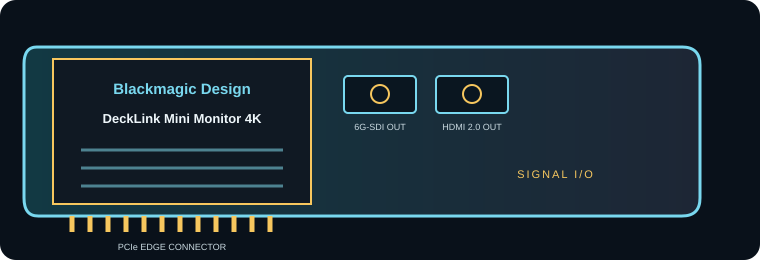

[ INDIVIDUAL COMPONENT // EXPANSION CARDS ]
Blackmagic Design DeckLink Mini Monitor 4K
Compact PCIe output card for monitoring and playback to SDI and HDMI displays. This is a model-specific reference; verify the board revision and full specifications against the official sources before installation.

IDENTIFICATION: Match the silkscreen/model marking, part number, board revision and bracket to manufacturer documentation. Port direction, supported formats and driver behavior can vary by model revision and software release.
Capture, playback and compatibility specifications
| Exact model | DeckLink Mini Monitor 4K |
|---|---|
| Bus / host interface | PCI Express 2.0 four-lane (x4) card; compatible with x4, x8 and x16 PCIe slots. Check chassis clearance, display timing and Desktop Video host support. |
| Capture / playback interface | One 6G-SDI output and one HDMI 2.0a output with embedded audio for video monitoring/playback; outputs are not capture inputs. |
| Resolution and frame-rate envelope | SD/HD/Ultra HD output up to 2160p30 on the supported HDMI/SDI formats; Blackmagic describes it as a playback card for monitoring all formats through 2160p30. |
| Pixel format and codec handling | Supported Desktop Video workflows include uncompressed 8/10-bit 4:2:2, Apple ProRes family and DNxHR/DNxHD among other codecs. File decoding is handled by the host application; this output-only card is not a standalone codec appliance. |
| Host compatibility | Requires Blackmagic Desktop Video and an application that supports DeckLink output. Confirm current OS/app compatibility, PCIe lane availability and display/monitor timing. |
| Limitations and installation checks | Playback/output only: no video capture. Maximum supported monitoring format is 2160p30; the display must accept the exact timing/color format, and HDMI playback may be constrained by HDCP policy. |
Integration notes and limitations
- Measure available PCIe lanes and sustained host/storage bandwidth; mechanical slot length alone does not guarantee the electrical link width needed by the card.
- Confirm that source timing, signal standard, cable, reference, pixel format, channel mapping and software configuration agree before recording or playback.
- Record driver/firmware versions, operating system, application, breakout/accessory part numbers and tested mode. Update only with a recovery plan for mission-critical rigs.
- Playback/output only: no video capture. HDMI and SDI ceilings differ; do not assume 4K60 over 6G-SDI. The display must accept the exact timing/color format, and protected HDMI playback can be constrained by HDCP policy.
For codec planning, distinguish a video transport/interface and raw pixel format from a compressed media-file codec. A supported capture application may encode a file format that the card itself does not encode.
Manufacturer sources and support
- Blackmagic Design — DeckLink Mini Monitor 4K manufacturer technical/product informationProduct-line technical reference; consult the exact model format and interface table for the required mode.
- Blackmagic Design — Blackmagic Desktop Video downloads and release notesOfficial support, driver or release-note resource; operating-system and software compatibility can change by release.
Manufacturer documentation for the precise hardware revision takes precedence over generic workflow or family-level guidance.